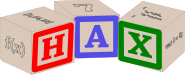

Hax is a Programmatic Data Editor inspired by the Spreadsheet.
It can be used as a calculation tool like a spreadsheet or for the
creation and manipulation of data.
Hax does not replace the spreadsheet, it is more of a power user version of the spreadsheet. See the comparison below:
|
Spreadsheet
|
Hax
|
|
Best for working with simple models and doing data presentation.
|
Best for working with complex models and doing data manipulation.
|

|

|
- A grid of cells, each cell is named according to its location in the grid.
|
- Hax replaces cells with individual tables. Tables are given descriptive names such as "revenue".
|
- Each cell has a static value or a formula to calculate this value.
|
- Each table has a static value or a formula to calculate the value.
|
- A cell value is a simple value like a number or a string.
|
- A table value is a data structure such as an array, or something more complex.
|
Motivation for Hax
The motivation behind Hax was to make it easier to write real code in a spreadsheet-like tool.
- The variables names from a spreadsheet, such as B$5, are replaced with descriptive names such as
revenue to make the code more understandable.
- The formulas are applied to entire data structures, so loops or recursive functions can be used, rather than
copying and pasting formulas over a range of cells.
These new features make the tool more of a coding environment. Admittedly there is
extra overhead in writing this code. For simple models, the spreadsheet is easier.
However, once the model gets more complex, it is much easier to organize, debug and
maintain in Hax.
Implementation
Hax runs completely in the browser and is written in javascript. The user scripting language
is also javascript.
Because Hax is uses javascript, the data format for data structures is JSON. This is a convenient
because JSON is one of the most prevelent data formats, such as for metadata files and data transfer
in web services.
ADD COMPATIBILITY!!! - browsers and javascript versions
Examples
(make links to example pages here)
ALSO TO DO:
- links at top of page, including to the actual App!
- prettier header, standardized over example pages.
- quick start?
- documentation?